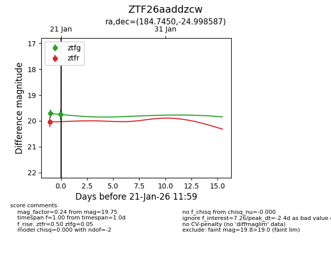
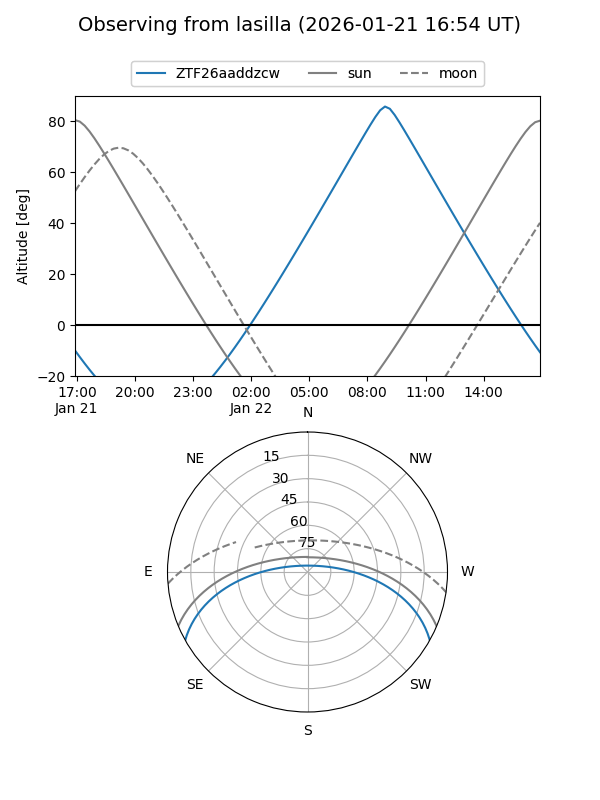
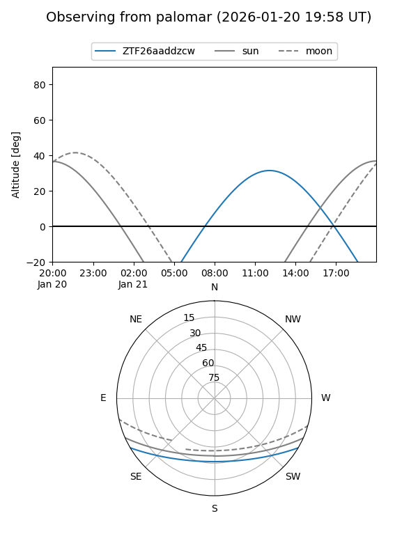
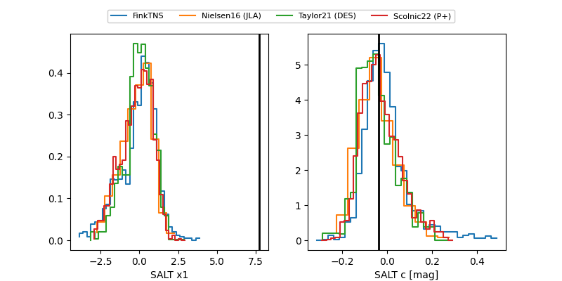

ZTF26aaddzcw
Target ZTF26aaddzcw at 2026-01-21 12:01
Aliases and brokers:
FINK: link
Lasair: link
ALeRCE: link
alt names
ZTF26aaddzcw (ztf,fink_ztf)
Coordinates:
equatorial (ra, dec) = 184.7450,-24.99859
equatorial (HMS+DMS) = 12:18:58.80,-24:59:54.91
galactic (l, b) = (293.6787,+37.28929)
Flags:
Photometry:
last ztfg=19.75, ztfr=20.04
2 ztfg, 1 ztfr detections
Lightcurve

Visibility


Additional plots
